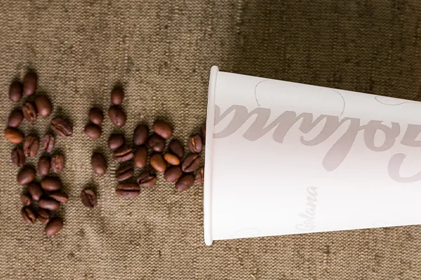
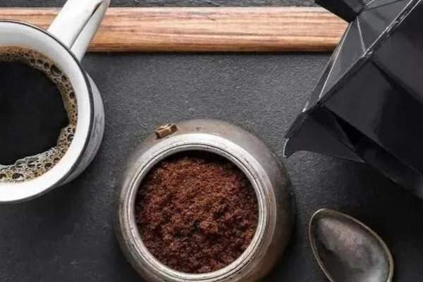
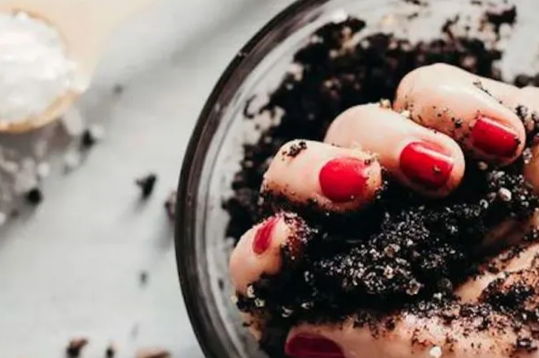
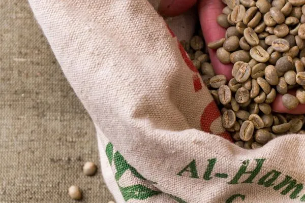

Лучшее кофе в стране
Компания
Golana
Наш интернет магазин
На рынке с 2002 года
Наша компания работает уже более 20 лет, что свидетельствует о нашем опыте и надежности. Это длительное присутствие на рынке позволяет нам лучше понимать потребности клиентов и адаптироваться к изменяющимся условиям.
Большой выбор
Мы предлагаем широкий ассортимент товаров, чтобы удовлетворить потребности различных клиентов. Это может включать в себя разнообразие категорий продукции, брендов и ценовых категорий, что позволяет каждому клиенту найти то, что ему нужно.
Удобство
Мы работаем над тем, чтобы процесс приобретения товаров был максимально удобным для наших клиентов. Это может включать в себя простоту заказа, удобные методы оплаты, качественное обслуживание клиентов и поддержка на всех этапах сотрудничества.
Более 500 клиентов
На рынке с 2002 года
Golana Group
Большой выбор
Удобство
Более 1000 наименований
Аренда кофейного оборудования
Вам нравится наш кофе и устраивает наша ценовая политика, но у вас нет кофейного оборудования? В этом случае мы можем предложить кофемашину на условиях аренды. При данной форме сотрудничества вы не привязаны к объёму выборки нашей продукции. Более того, на вас будут распространяться скидки на кофе, при условии разовой закупки от 15 кг в предоплату. Важно отметить - мы предоставляем оборудование исключительно при условии использования нашего кофе.
Условия для партнеров
Гарантии, которые вы получите благодаря сотрудничеству:
- Полное соответствие качества продукции
- Гибкая стоимость, в зависимости от объёма партии
- Возможность дегустации продукции на этапе выбора
- Помощь в подборе нужных сортов кофе в соответствии с потребностями вашего бизнеса
- Личный менеджер, отвечающий за сборку заказов и организацию доставки продукции
- Своевременная поставка продукции в полном объёме
Почему Golana?
Цена позволяет поддерживать высокую маржинальность напитков
Ассортимент отвечает запросам профессионалов
Потрясающий, насыщенный вкус нравится потребителям
Подходит для приготовления различных напитков на основе кофе, в том числе и по авторским рецептам
Блог

4 фактора, которые влияют на вкус кофе
Каждый день нам приходится отвечать на вопросы посетителей о том, как готовить хороший кофе. В этой статье мы расскажем основные советы.
Посмотреть
Раф-кофе – что это такое?
Посмотреть

Факторы влияющие на вкус эспрессо
Посмотреть

Чем полезен кофейный скраб?
Посмотреть
